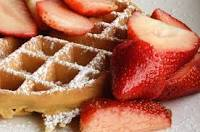

Belgian Waffle

Description
I learned that belgian waffles were my favorite breakfast
item when I visited Firstwatch in Birmingham, Alabama. I love
the warm waffle topped with fruit/preserves, I think its a
perfect mixture.
This waffle will be made with flour and topped with strawberries!
Ingredients
- 2 cups all-purpose flour
- 3/4 cup sugar
- 3-1/2 teaspoons baking powder
- 2 large eggs, separated, room temperature
- 1-1/2 cups whole milk
- 1 cup butter, melted
- 1 teaspoon vanilla extract
- Sliced fresh strawberries or syrup
Steps
- In a bowl, combine flour, sugar and baking powder. In another bowl,
lightly beat egg yolks. Add milk, butter and vanilla; mix well.
Stir into dry ingredients just until combined. Beat egg whites until
stiff peaks form; fold into batter.
- Bake in a preheated waffle maker according to manufacturer's directions
until golden brown. Serve with strawberries or syrup.
Nutritional Facts
2 waffles: 696 calories, 41g fat (25g saturated fat), 193mg cholesterol, 712mg
sodium, 72g carbohydrate (34g sugars, 1g fiber), 10g protein.